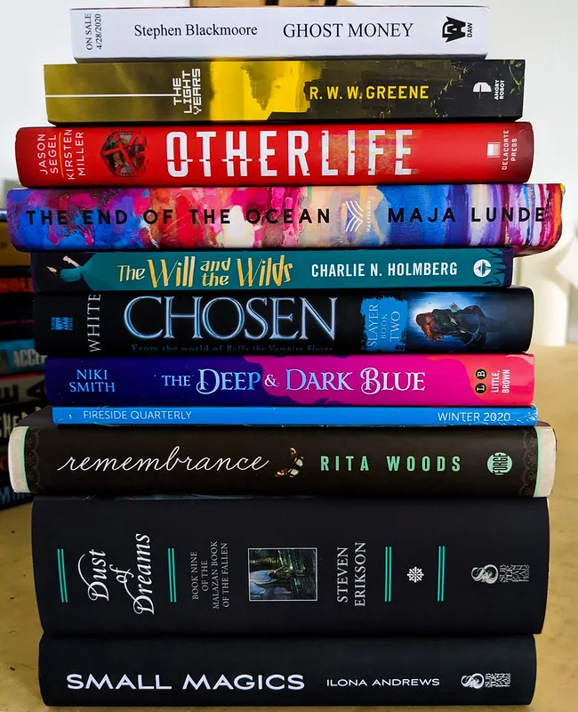

My Interest

Reading
If I have enough free time, I will read, either online or in a book. I can read all genres but my type is a detective and fantasy genre.
photography
I have been fascinated with photography since childhood. No matter where you travel, always carry a camera. Whether it's a digital camera or a film camera.

Travel
I like to travel a lot. Even though I rarely have a chance to go But every time I travel, I'm very happy. And traveling the world is one of my goals.